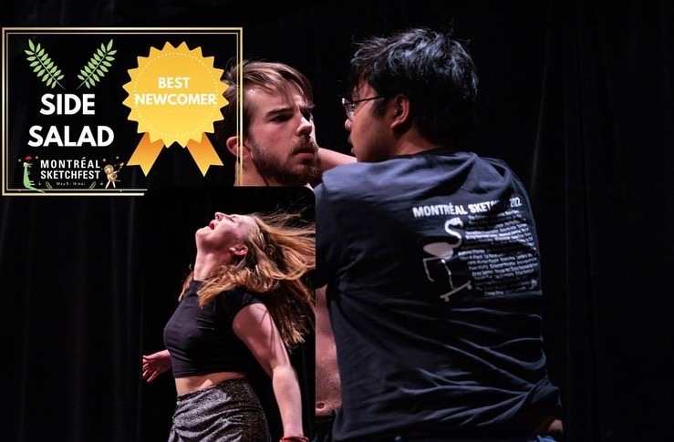
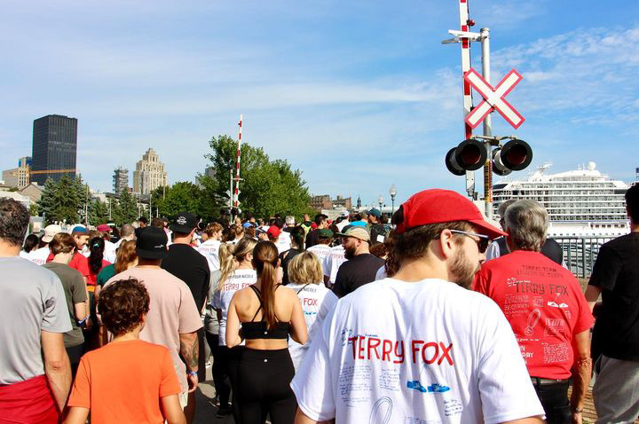
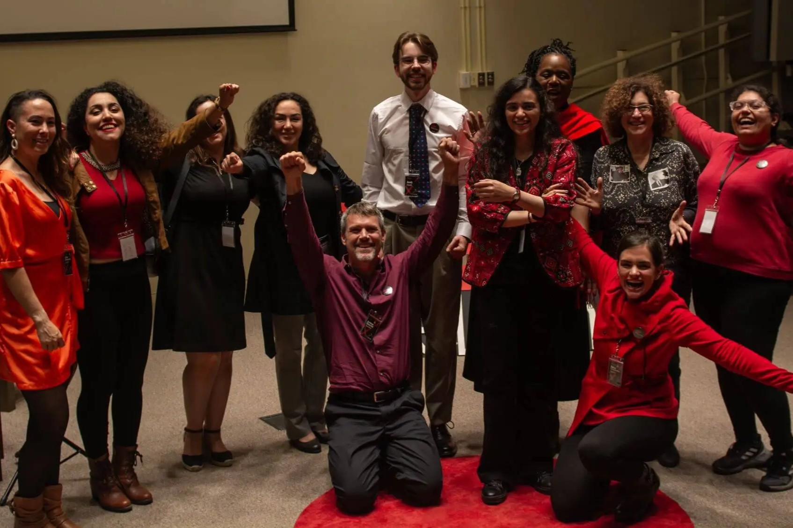
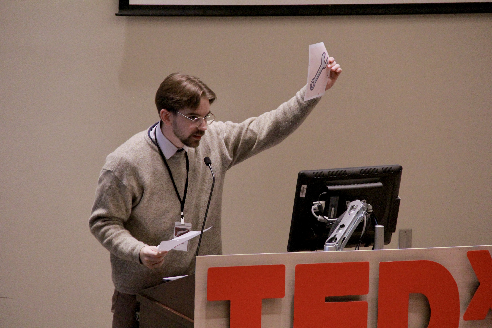
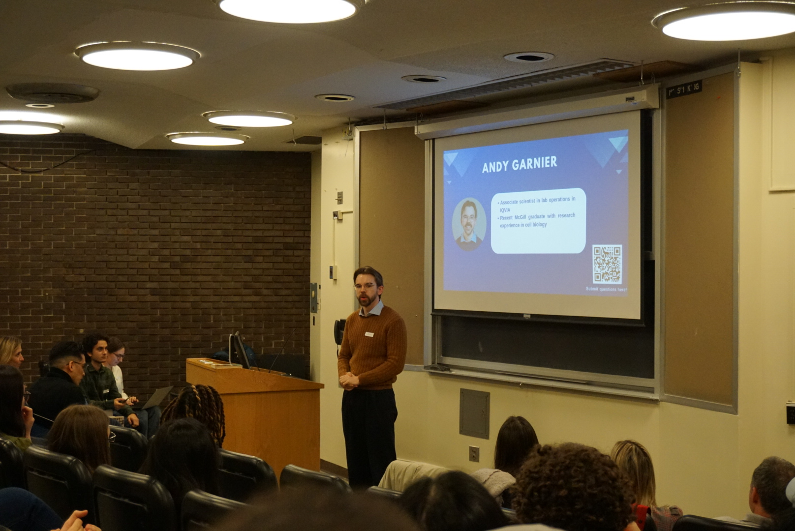
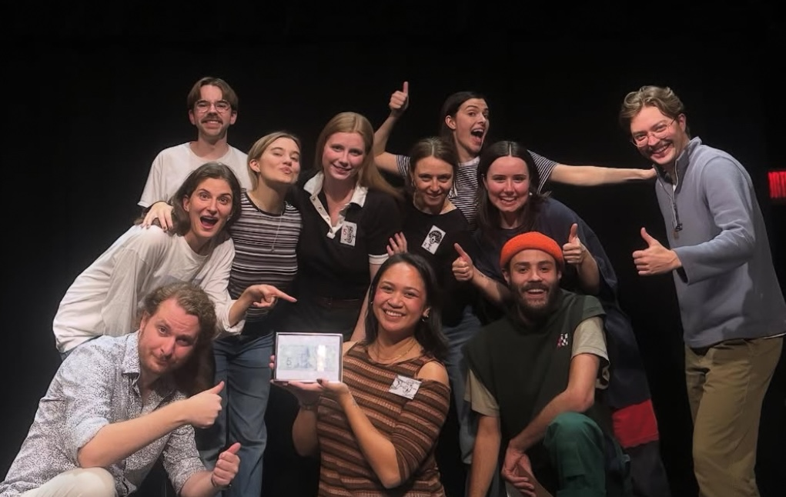
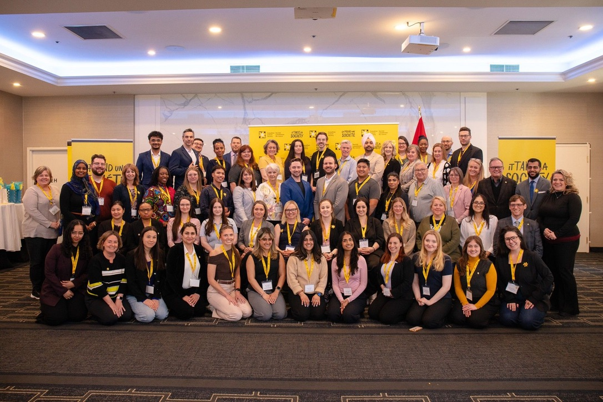

Medical writer · Computational biologist
Andy Garnier
I translate complex science into clear, useful communication.
About me
Working at the intersection of science, communication, and data
I’m a biochemist and computational biologist with experience translating complex evidence for specialist and lay audiences. I hold a MSc in Biochemistry from McGill University, where I investigated protein vulnerabilities in cancer through computational screening and experimental validation.
My professional experience spans pharmaceutical medical writing , laboratory science, and workflow automation. I have developed communications for healthcare professionals and patients, conducted lab work across R&D and clinical projects, and programmed tools for automation.
Outside of research and engaging in science communication, you can find me running, cycling, performing live theatre, or working on side projects like browser-playable games.
Selected work
Writing, research, and technical projects
Explore selected work across medical communications, computational biology, workflow automation, and creative programming.
Projects
Automation tools
Beyond the page and the lab
Science communication and creative work
I’m fascinated by computational drug discovery, bioinformatics, and science communication. I’m always exploring new ways to merge creativity with technology and to make technically complex ideas more engaging.
Outside of work, that same curiosity drives me to seek out new challenges. Whether through hosting on TEDx events, performing improv theatre, or exploring new roads by bike, I'm always up for a challenge.







McGill Drama Festival Actor — 2022
Get in touch
Let’s connect
Interested in my work or want to start a conversation? Connect with me on LinkedIn and shoot me a message.